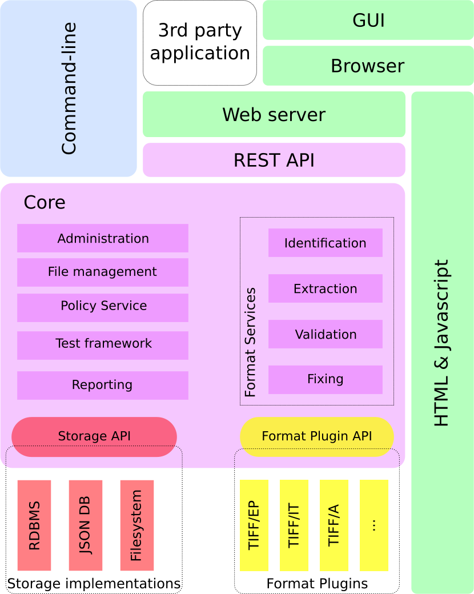
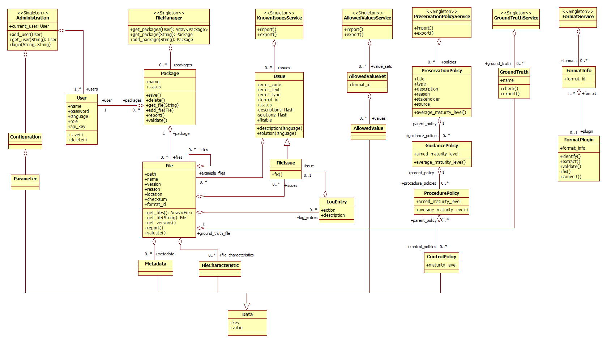
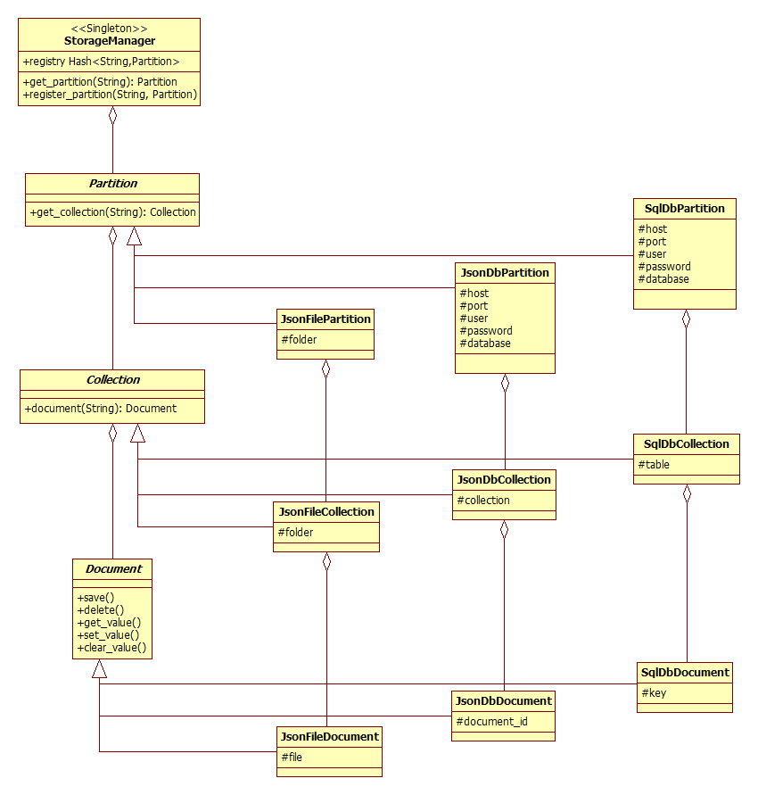

Download Functional analysis: (odt/pdf)
Download Technical design: (odt/pdf)
Download TIFF specification: (odt/pdf)
Download test files
Introduction
This document describes the technical design of the LIBIS/AWare conformance checker. The detailed functional description can be found in the Functional analysis. The description in the Functional analysis is not repeated here. The two documents need to be read together.
Architecture overview

The solution consists of a “Core” that comprises all business logic required for executing the core tasks of the solution, a storage subsystem, a format service plug-in subsystem, a command-line module and a REST-API + browser-based GUI combination. The Core uses the storage subsystem through an API that abstracts the implementation details away from the application. Format specific logic is implemented in external modules (plug-ins) and that implement actions abstracted in an API.
The Core modules functionality can be addressed directly by a module that implements the command-line version of the solution or it can be accessed through a HTTP REST API made available by a web server. A graphical version of the solution is implemented as a web application that can be accessed locally or over the network.
Three configurations are possible:
-
Command-line: the Core is accompanied with the command-line module and local implementations of the data storage
-
Local GUI: the Core and local implementations of the data storage combined with a light-weight HTTP server makes up the configuration. A compatible browser is required to access the GUI.
-
Web server application: the Core, an application server and multi-user database based storage implementations are combined to form a robust multi-user web application that can be accessed by a compatible browser over the network.
Core
Each module in the Core implements a well-defined set of functionality and may or may not use the storage API and/or Format Plug-in API. Modules may be divided into sub-modules to further isolate functional units. Some modules may rely on other modules (e.g. to check authorization). Each (sub-) module is implemented by a single class. Such class methods may return instances of other classes (e.g. an instance of the User class when retrieving user information). Such objects live as long as the application holds a reference to it. If the object requires persistent state, the object will take care of saving and retrieving the state with the help of the storage API. A new instance of the class will represent the last saved state of the object.
The following Core modules will exist:
-
Administration
-
System configuration
-
User management
-
-
Reporting
-
Export
-
File management
-
Format Services
-
Identification
-
Extraction
-
Validation
-
Fixing
-
The Storage API provides abstract access to the storage implementation(s) and the Format Plug-in API does the same for the Format Plug-ins.
Storage subsystem
The storage subsystem defines a set of storage partitions. Each partition will store the data for a particular set of data:
| Partition | content |
|---|---|
| System | All global system configuration parameters. This is the primary configuration storage. It also contains the information about registered format plug-ins. |
| User | All data regarding registered users. Besides the typical user and log in information, it may also contain user rights and user-related log information. |
| Files | All files under treatment. Each file may have multiple versions and they are organized in pre-ingest packages. All data stored about a file will be added to the database and linked to the corresponding file version. For each file version the reason, operation(s) performed and time-stamp are recorded. |
| Preservation Policy | Preservation policy data. |
| Format | Allowed values and known issues for each supported format. The data will be installed and updated as part of the installation and update of a format plug-in. |
Each partition can be implemented as directories and files on a file system, collections and documents in a JSON database or tables and records in a RDBMS.
The Storage API abstracts the physical storage in a document oriented way. Data interaction is by collections and documents. The content of each document can be queried as a Hash. Each module that uses the storage will hide the storage abstraction in a concrete object type (e.g. User, Package, File, Policy, etc.). The Storage API is intended only for use by the Core modules.
A Storage Manager coordinates the registration and configuration of the storage partitions. At start-up the system configuration is read and for each partition the storage implementation is instantiated with the correct parameters. Whenever a (sub-) module requires services from a given storage partition it gets a handle for the storage instance from the Storage Manager. Using the handle the module can perform the actions it needs to perform.
Format Plug-in subsystem
Each supported format will supply a Ruby file that will automatically register itself with the Plug-in Manager. The registration consists of supplying basic format information and the actions it supports. A wrapper class may be needed for auto-registration.
The actions a format plug-in can support are:
-
Identification
-
Extraction
-
Validation
-
Fixing
A single plug-in may support multiple formats.
Modules
Administration module
In this module several operations are grouped that an authorized user will need for maintaining the installed program. The module allows an authorized user to set and retrieve system configuration parameters.
This module also combines the actions required for authentication and authorization of users. System configuration will decide how complex the module will be. In case of a command-line program some operations may be dummies.
Actions:
-
CRUD Operations on users. User data consists of:
-
log in name
-
password
-
UI language
-
Role
-
-
Log in
-
Authorization
-
get and recreate API key
File Management
The File Management module supports the logic to:
-
CRUD Manipulations on a Pre-Ingest Package (PIP)
-
CRUD Manipulations on files in a PIP
Files are expected to exist on the system running the solution. For web application deployments an upload functionality will be available. The upload functionality has two parts: client side code that allows the user to select files, generates the check sums and sends the files in smaller packages to the server and server side code that reassembles the packages and checks the check sum.
The information stored in the DB about one or more given files can be retrieved as structured data in JSON format for further formatting or processing. Besides some general file information the report contains format errors and warnings. For each error or warning a short description and a link to more detailed information (if available) is listed. Severity information may indicate that the error can be fixed by a format plug-in.
The result of the conformance checker can be exported. The Web installation will generate a (multi-part) ZIP file, but local installations will export into a folder structure.
The exported structure will contain the original files in the same structure as uploaded. The new files are added as well as a METS file containing for each file the check sum, the technical meta-data and PREMIS audit log.
Policy Services module
This module supports the storage, retrieval and update of Preservation Policies. It will also be possible to check files against any given policy.
Test framework module
This module supports the Known Issues Services, Allowed values Services and the Ground truth service. The module supports the import and export in the services. And also the Ground truth check for the Ground truth service.
Reporting module
Reporting functionality is added in all places in the system where there is relevant information available. In general the report functionality will export a data-set in JSON format. This is what the library API and what REST API will deliver to the clients. It is up to the client code to format the data. So will the GUI be able to present the data in printer-friendly HTML format. Likewise a client could allow report data to be downloaded as CSV files ready to be imported into Excel.
Format Services module
Identification sub-module
This module allows the user to identify a given file. The file will be passed to all registered format plug-ins that support identification. One or more type identifiers may be the result of this operation.
Extraction sub-module
The extraction operation will call the plug-in to extract the file’s meta-data. The meta-data will be linked to the file and stored in the file partition storage.
Validation sub-module
If the plug-in provided allowed values, validation of the extracted file characteristics will be performed and for each warning or failure an issue will be generated and attached to the file information.
Fixing sub-module
Fixing an error in a given file will generate a new file version in the file partition storage. The version information will indicate that the file was altered for fixing the given error. If the format plug-in indicates that the fixing procedure failed, no new version will be created.
Another operation provided by this sub-module is to convert a file to another format. Each format plug-in provides information to the service what format conversions it supports. Successful file conversion will result in a new version of the file with the report from the plug-in attached.
API Specification
The API exists on two levels:
When using the functionality in a library-context, the client modules call methods on classes and use object’s attributes directly. For this a class documentation will be provided.

Likewise for the implementation of storage plug-ins class documentation will be provided.

The second API level is REST based and provides access based on language and platform independent technologies like HTTP and JSON. The usage of the API requires a HTTP server, even for local usage. The GUI options will use the REST API.
REST API summary
| Resource | URL | methods |
|---|---|---|
| /login | POST | |
| /user | / | GET PUT POST DELETE |
| /apikey | GET | |
| /packages | GET | |
| /reports | GET | |
| /config | / | GET |
| /parameter | / | GET PUT POST DELETE |
| /package | / | GET PUT POST DELETE |
| /files | GET | |
| /export | PUT | |
| /file | / | GET PUT POST DELETE |
| /metadata | GET PUT DELETE |
|
| /file_characteristic | GET PUT DELETE |
|
| /issue | GET PUT DELETE |
|
| /analyze | PUT | |
| /reports | GET | |
| /export | PUT | |
| /convert | GET PUT |
|
| /report | / | GET |
| /issues | GET | |
| /issue | / | GET PUT POST DELETE |
| /search | GET | |
| /fix | PUT | |
| /export | PUT | |
| /known_issues | / | GET |
| /update | PUT | |
| /export | PUT | |
| /allowed_values | /update | PUT |
| /policy | / | GET PUT POST DELETE |
| /check | PUT | |
| /export | PUT | |
| /evaluate | PUT | |
| /guidance_policies | GET | |
| /guidance_policy | / | GET PUT POST DELETE |
| /procedure_policies | GET | |
| /procedure_policy | / | GET PUT POST DELETE |
| /control_policies | GET | |
| /control_policy | / | GET PUT POST DELETE |
| /ground_truth | / | GET |
| /update | PUT | |
| /export | PUT | |
| /upload | PUT | |
| /test | PUT |
Technology overview
The Core modules will be written in the Ruby language based on the Ruby 2.0 specification. Currently we are targeting the JRuby 1.7.19 or later run-time environment. The JRuby run-time runs on a Java VM (we will target Java SDK 7) and allows to combine Java compiled code with Ruby code. Format plug-ins and storage plug-ins have therefore an implementation choice of Java or Ruby. It is expected that for Java plug-ins a small Ruby wrapper will be needed to ensure auto-registration and simplify cross-language communication.
The REST API will be deployed on thin for a local GUI, preferably on torquebox for network deployment.
Core module requirements:
-
bundler (gem)
-
rake (gem)
-
rspec (gem)
-
json (gem)
-
hashie (gem)
-
nokogiri (gem)
-
activesupport (gem)
-
bcrypt (gem)
-
sidekiq (gem)
Command-line requirements:
- thor (gem)
REST API and documentation:
-
sinatra (gem)
-
grape (gem)
-
grape-swagger (gem)
GUI requirements:
-
i18n (gem)
-
tzinfo (gem)
-
slim (gem)
-
less (gem)
-
jsBCrypt (JavaScript)
-
AngularJS + Angular Material (JavaScript)
Storage plugin requirements:
-
for Ruby plug-ins:
-
sqlite3 (local installation) / mysql2 (web installation)
-
json (local installation) / mongoid (web installation)
-
-
for Java plug-ins:
-
JDBC drivers for Sqlite3 [Xerial?] (local installation) / MySQL (web installation)
-
JSON library (local) / MongoDB Java driver [or Hybernate OGM?] (web)
-
Note: this list is not complete and probably will not be until development is done.
| Preferred software | License preferred software | GPL compatible1 | GPLv3/MPLv2 alternative |
|---|---|---|---|
| Thin | Ruby license | Yes | OpenLiteSpeed, Unicorn, Resin |
| Torquebox | LGPL + MIT | Yes | Relicense/Resin |
| Bundler | MIT | Yes | Relicense |
| Rake | MIT | Yes | Relicense |
| Rspec | MIT | Yes | Relicense |
| Json | Ruby | Yes | Jsonify ? or oj (MIT) |
| Hashie | MIT | Yes | Relicense |
| Nokogiri | MIT | Yes | Relicense |
| Activesupport | MIT | Yes | Relicense |
| Bcrypt | MIT | Yes | Relicense |
| Sidekiq | LGPLv3 | Yes | Also uses Redis (BSD) |
| Thor | MIT | Yes | Relicense |
| Sinatra | MIT | Yes | Relicense |
| Grape | MIT | Yes | Relicense |
| grape-swagger | MIT | Yes | Relicense |
| i18n | MIT | Yes | Relicense |
| Tzinfo | MIT | Yes | Relicense |
| Slim | MIT | Yes | Relicense |
| Less | Apache 2.0 | Yes | Stylus (MIT; relicense) or Sass (MIT;Relicense) |
| jsBCrypt | BSD 3-Clause License | Yes | node.bcrypt.js (MIT; Relicense. But some code is BSD) |
| AngularJS | MIT | Yes | Relicense |
| Angular Material | MIT | Yes | Relicense |
| sqlite3 | Public Domain | Yes | Relicense |
| Sqlite3-ruby | BSD-3 | Yes | qoobaa/sqlite3 (MIT; Relicense; this is an old driver and the quality is probably not as good als sqlite3-ruby) |
| Xerial | Apache 2.0 | Yes | Sqljet (GPLv2) |
| mysql2 | MIT | Yes | Relicense Depends on the use of database. Whitedb is an alternative, but the ruby interface needs to be developed |
| Mysql | GPLv2 | Yes | Depends on the use of database. Whitedb is an alternative |
| MongoDB | AGPL | Yes | Whitedb |
| mongo-ruby-driver | Apache 2.0 | Yes | Moped (MIT; Relicense) |
| mongo-java-driver | Apache 2.0 | Yes | |
| Mongoid | MIT | Yes | Relicense Depends on the use of MongoDB |
| Kiqstand | MIT | Yes | Relicense Depends on the use of MongoDB |
| Hibernate OGM | LGPL | Yes | Morphia (Java ODM; Apache license) |